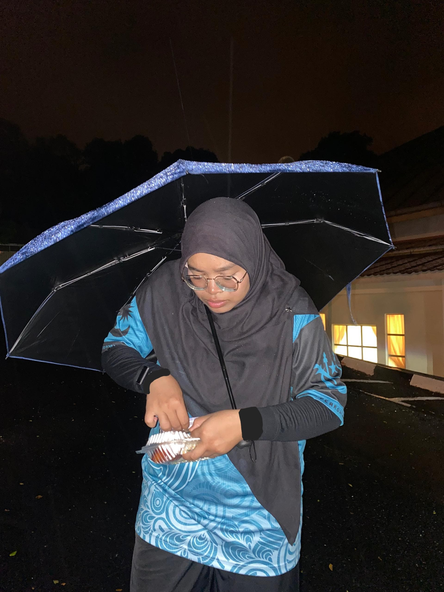

About Me
I am a degree student who follows the flow. I let things happen rather than trying to control them as I believe that one day,
I will fine a way to live my life to the fullest. I'm sure of it. I'm just had no idea how I would manage it.
